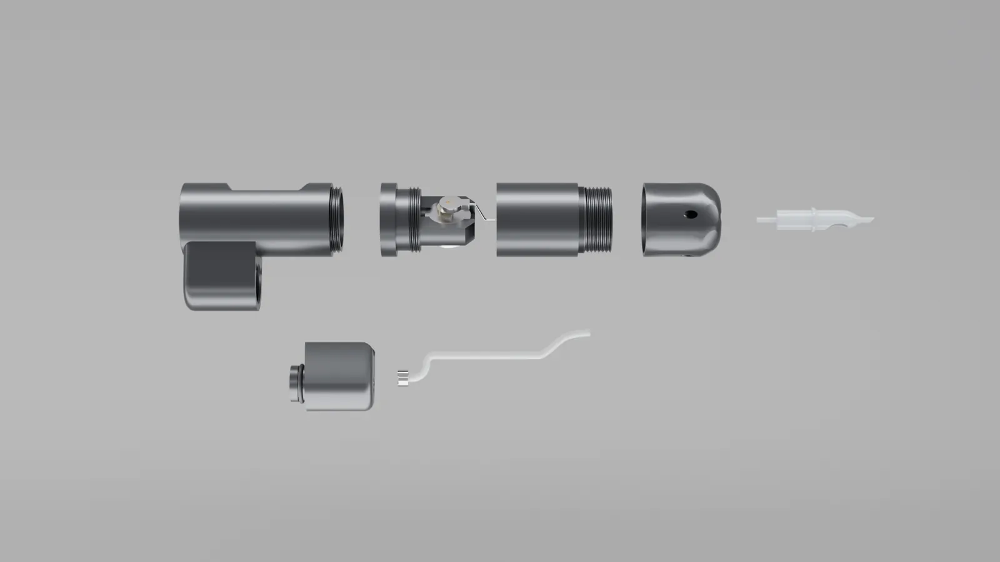
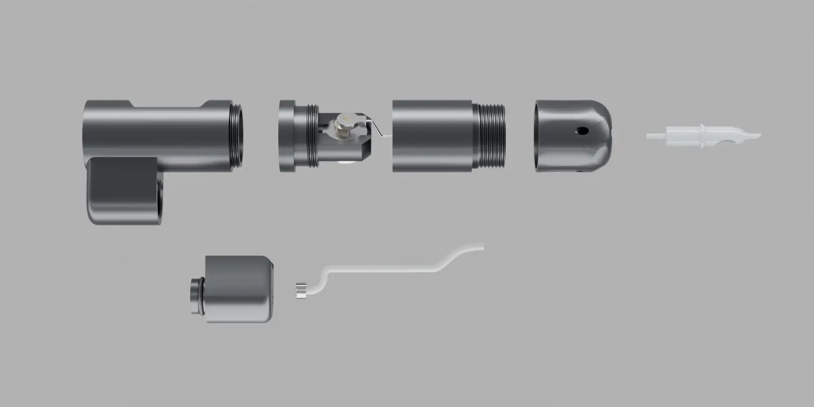

Cartucho
Cartucho diseñado exclusivamente para la máquina VK0, donde puedes incorporar la tinta que mejor se ajuste a tus sesiones.
Diseñada y fabricada por Vinko Solutions para el nuevo estándar del tatuaje: tu tinta en cartucho, cero desperdicio y sin contaminación cruzada.

Arrastra sobre la imagen para girar el VK0 o elige una vista.
Pulsa los puntos del despiece o elige una pieza de la lista.

Cartucho diseñado exclusivamente para la máquina VK0, donde puedes incorporar la tinta que mejor se ajuste a tus sesiones.
Se conecta al cartucho y va dirigido hacia la aguja para que deposite la tinta durante la sesión. Una vez terminada la sesión, el tubo se retira y se usa uno nuevo.
Donde incorporamos la batería recargable, la pantalla TFT para ver toda la información de la máquina y mucho más.
De alta calidad, para las sesiones más exigentes. Stroke fijo, personalizado al gusto del artista: de 2,5 mm a 4,5 mm.
Con diseño modular para que la máquina se desmonte con facilidad a la hora de limpiarla y mantenerla. También es útil para cambiar el stroke.
Ergonómico y diseñado para que lo ajustes a tu gusto, pero siempre pensando en la guía del tubo desechable.

Sin vasos ni accesorios de más. Solo lo necesario para tatuar con el nuevo estándar.
Máquina, pedal y cartuchos viajan juntos en un maletín rígido con su espuma a medida.
Contenido orientativo del kit.
Llénalo con la tinta que prefieras.
Usas solo la tinta que necesitas.
Tubo desechable en cada sesión: sin contaminación cruzada.
Menos preparación y menos limpieza.
Estamos seleccionando artistas y estudios para probar el VK0. Plazas limitadas.